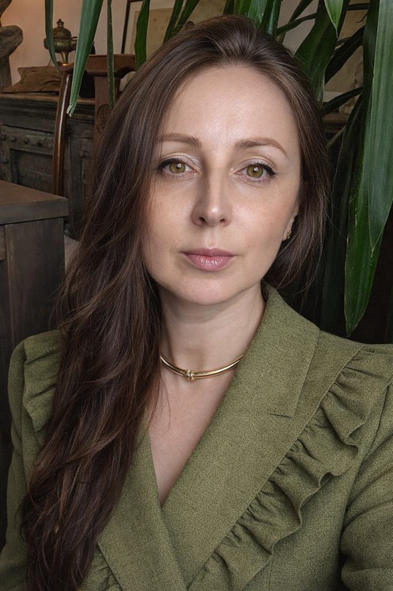
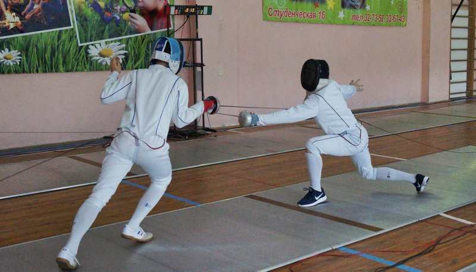
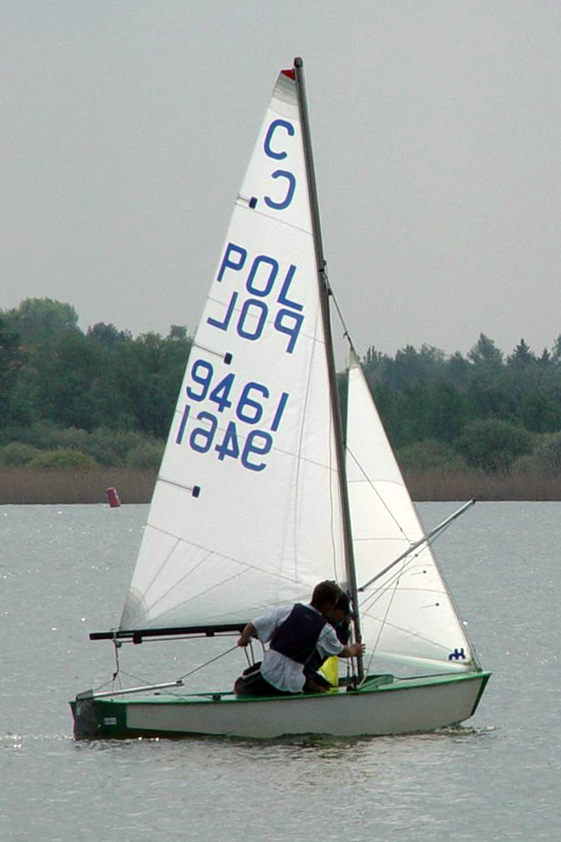
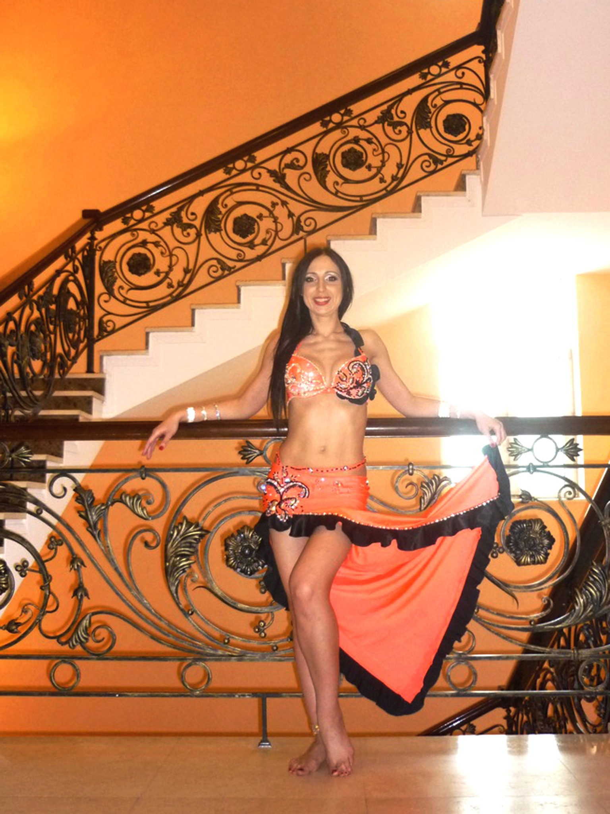
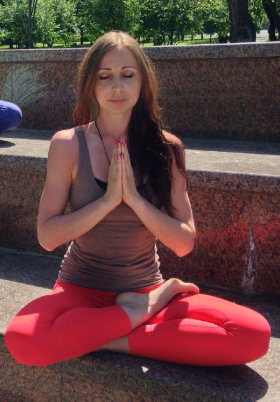
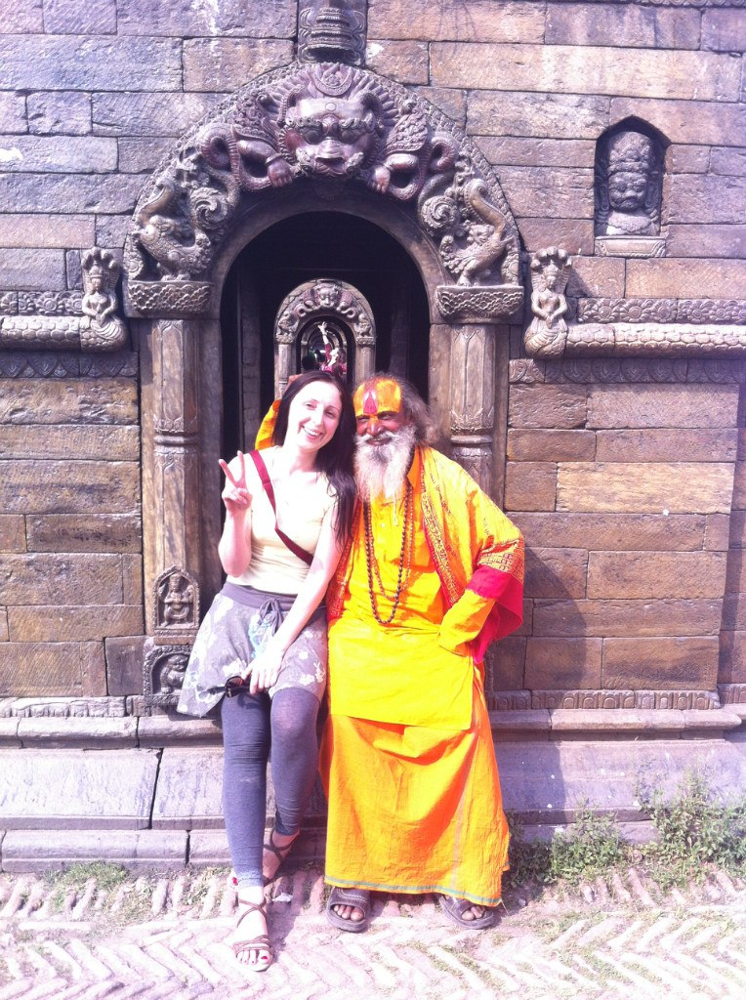

Елена Коновалова
Готова быть рядом в непростой период вашей жизни
Не обязательно проходить это одному.
Записаться на консультацию
Кризисный психолог
Я знаю, как бывает больно и одиноко. Поэтому моя работа состоит в том, чтобы быть рядом бережно, честно и внимательно.
Помогаю тем, кто жил в боли, критике и эмоциональном холоде.
Работаю сопровождающим психологом при прохождении программ 12 шагов ВДА/ДФС, любовная зависимость/созависимость.
В профессию пришла через личный кризис. Теперь точно знаю: в любой, даже самой трудной ситуации можно найти опору и осознать свою способность расти.
Мой терапевтический стиль — бережный и поддерживающий.
Каждый из нас — герой своей истории. На пути встречаются препятствия, но каждое преодоление добавляет силу.
вера в себя · личные границы · смелость быть собой · сепарация от родителей · контакт со своими ценностями · внутренние опоры · присвоение агрессии · интеграция силы
детские травмы · эмоциональные триггеры · чувство одиночества · изоляция · обида · стыд · гнев · тревога · подавленные чувства · игнорирование потребностей
Использую интегративный подход — не являюсь адептом какого-то одного метода. В работе уделяю много внимания телесному проживанию, интеграции эмоций, ощущений, мыслей, опыта, формированию новой целостной идентичности.
Синергия разных методов даёт возможность многоуровневого воздействия, сохраняя фокус на индивидуальных потребностях. В работе гарантирую безопасность и конфиденциальность. Еженедельно посещаю личную терапию и супервизию.
В этих случаях лучше обратиться к профильному специалисту или в специализированную службу помощи.
Для меня важно постоянное профессиональное развитие

В подростковом возрасте занималась фехтованием и судила соревнования

Была матросом на яхте типа «кадет»

Выигрывала кубки по восточным танцам, готовилась в номинации фитнес-бикини — травма привела в йога-зал

С 2013 года изучаю духовные практики: випассана, йога, буддизм. Сертифицированный преподаватель йоги

Обучалась внутренним буддийским практикам в Непале, интегрирую майндфулнес в повседневную жизнь и терапию
Мой главный интерес: как устроен человек и его сознание, как мир формирует психику и как это можно преодолеть. Благодаря своему исследовательскому интересу благополучно пережила экзистенциальный кризис.
Немного из моей жизни
Если сейчас непросто, можно начать с одного сообщения.
Перед первой консультацией я попрошу вас заполнить опросный лист и внимательно ознакомиться с описанием условий нашего сотрудничества.